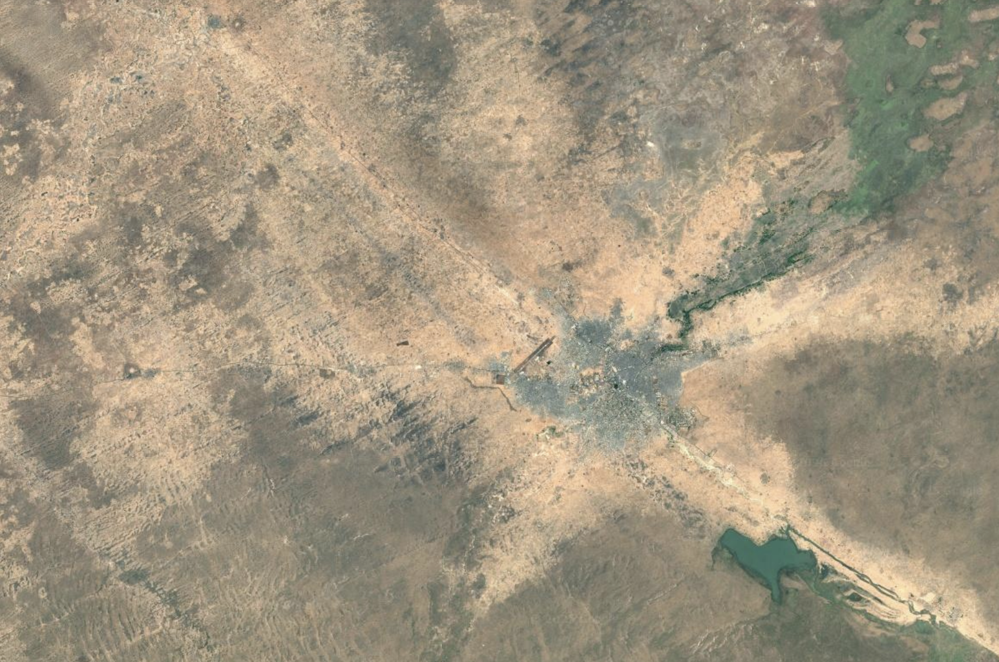

Standardizing care. Streamlining delivery.
Community health workers are the backbone of community-based malnutrition and disease management, treating millions of children for acute malnutrition and infectious disease every year, often with nothing but paper forms, limited supervision, and no feedback on outcomes.
Last Mile Science builds the digital infrastructure that distributed CHW programs need: mobile tools that standardize CMAM and IMAM protocols, dashboards that give supervisors real-time visibility across dispersed teams, and analytics that turn field data into actionable program intelligence.
Community Health Workers

Community health workers are a proven vehicle for care delivery. Our mission is to make managing decentralized CHW programs cost-effective at scale.
Decades of evidence show that community-based management of acute malnutrition (CMAM) works. The bottleneck isn't the model: it's the infrastructure needed to train, supervise, and coordinate distributed teams of CHWs across wide geographies. Last Mile Science builds that infrastructure.
From assessment to impact — in weeks, not years.
Our platform is designed for rapid deployment alongside existing community health programs.
Assess
We work with your team to understand existing workflows, treatment protocols, and data infrastructure.
Configure
We adapt our tools to your clinical protocols, languages, and reporting requirements.
Deploy
We train CHWs and supervisors, deploy mobile apps, and stand up dashboards connected to your program data.
Measure
Real-time analytics track treatment coverage, outcomes, and CHW performance — giving you evidence to improve and scale.
Our Solutions

Mobile App for CHWs
Guides health workers through malnutrition screening (MUAC, edema checks) and decentralized CMAM/IMAM treatment protocols, with offline support for the low-connectivity environments where distributed programs operate.

Dashboard for Managers
Real-time visibility into treatment coverage, default rates, RUTF supply levels, and individual CHW activity — giving remote supervisors the oversight they need to manage distributed teams effectively.
Deployment & Analytics
AI models that predict RUTF supply needs, flag SAM cases at risk of default, and map geographic coverage gaps — turning routine field data from distributed programs into actionable program intelligence.
Built by people who've been in the field.
Our team combines deep expertise in public health, data science, and software engineering, with years of experience working alongside community health programs.
Sara Estecha Querol, PhD
Co-Founder & CEO
Sara has over 12 years of experience in public health and nutrition research with multiple publications in top-tier journals as well as on-the-ground experience working in malaria and malnutrition programs in Syria, Yemen, Nigeria, Kenya, Mozambique, and the Central African Republic. She lives in Spain.
LinkedIn →
Hunter Merrill, PhD
Co-Founder & CTO
Hunter has a decade of professional experience building data-driven tools and software for decision-making and risk mitigation in precision agriculture and public health, including a biometrics authentication system for a malnutrition treatment program in Nigeria. He lives in the US.
LinkedIn → Personal Site →Help us shape the future of last mile care delivery.
We're looking for NGOs, ministries of health, and implementing partners running community health programs to pilot our tools. A typical pilot runs 3–6 months with a small cohort of CHWs — we handle setup, training, and support.